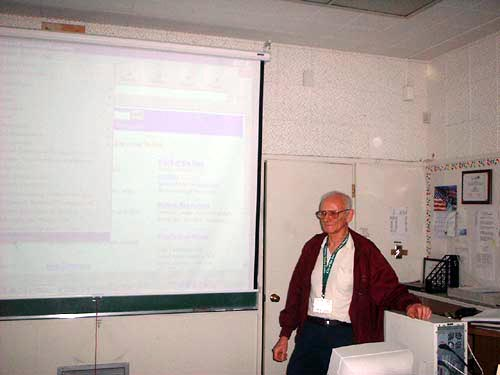
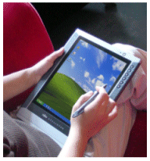

Because the illustrations are interactive and animated, the teacher has, in effect, a vast library of 'digital manipulatives' with which to demonstrate concepts using a computer and projector. The teacher also knows that the students can use the exact same manipulative themselves outside the classroom.
Apart from being fascinating to see and use, the interactive tools permit far more
better visualization and understanding. It is very difficult for example to experiment with the way a plane intersects a cone using a white board or even physical manipulative. It is almost impossible for the student to do it alone.
Other useful features include:
When the teacher is not there, this is the next best thing.
The student uses the search or table of contents to look up a word or term. This results in a page defining that concept, complete with its properties and usually an animated and/or interactive illustration. Usually, this is enough to jog memory about what went on it class. Heavy cross-linking encourages exploration beyond the initial query.
Every page is richly cross linked to other related topics permitting and encouraging exploration of other areas. Since math is knowledge is built layer by layer, a student that is missing a previous layer can immediately drill down for it on their own. Sick days are less daunting. The student benefits from:

The web site will work with all popular browsers, including Internet explorer, Firefox, Opera, and Safari. It uses no tricks that require special browser functionality, and the pages will cache correctly on the user's computer and any proxy servers in a school, thus improving performance and reducing network traffic on campus.
The interactive animations are written in HTML5 Javascript, which means that all modern browsers can display them with no extra software or plugins required.
All pages can be printed and any advertising will not appear in the printout. The printed versions are not copyright.